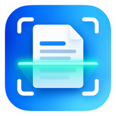

Scan & Go
Scannez · Enregistrez · Partagez
⚙
▣
Scanner un document
Photo → recadrage → PDF → partage
›
＋
Nouveau
scan
PDF
Dernier
PDF
➤
Partager
dernier scan
▧
Importer
une image
Mes scans récents
Voir tout ›
Aucun scan pour le moment.
Mes scans
＋ Nouveau
Aucun document enregistré.
Paramètres
Qualité PDF
Haute
Équilibrée
Petite taille
Mode de numérisation
Document N&B
Niveaux de gris
Couleur
Détection automatique des coins
🔒 Vos documents restent sur cet appareil.
Aucun compte ni serveur de stockage.
Supprimer tous les scans
⌂
Accueil
▱
Mes scans
⚙
Paramètres